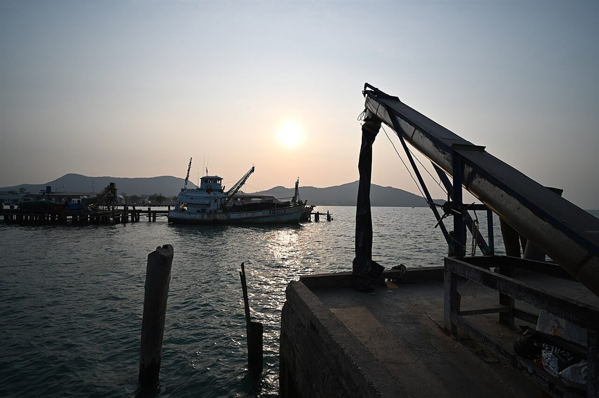
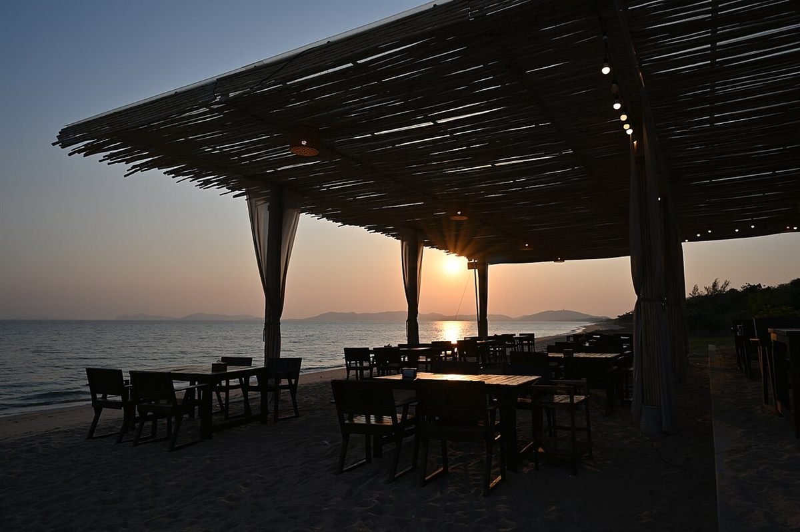
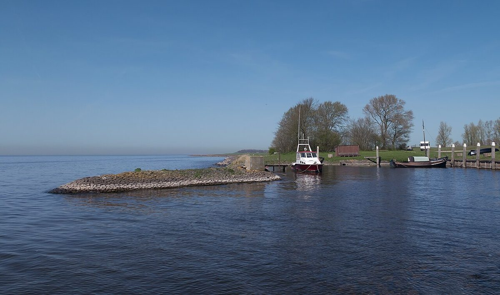
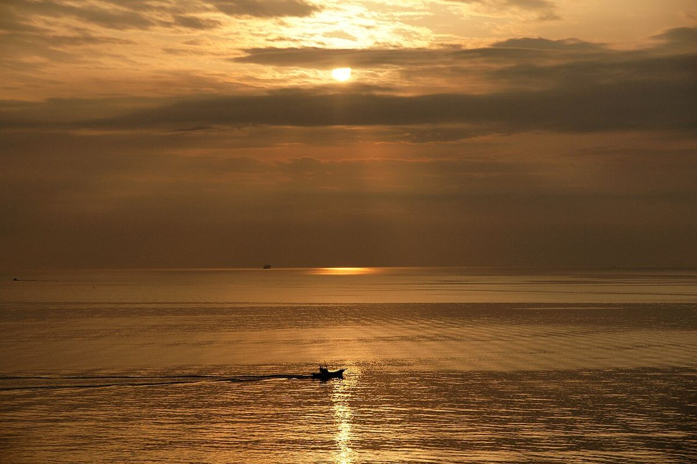
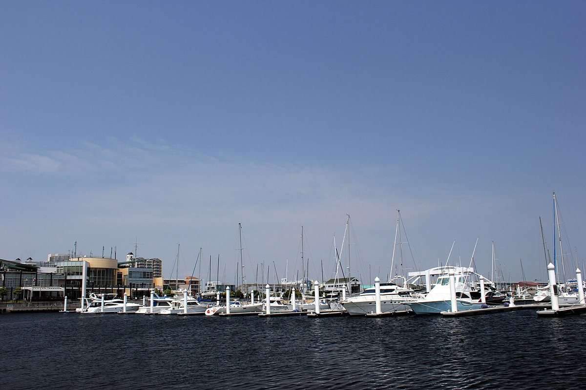
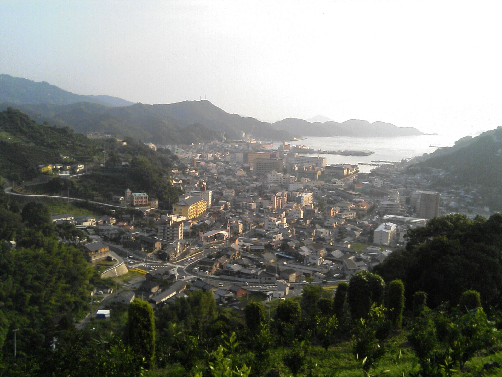

お店について
jade cafe(ジェイドカフェ)は、静岡県賀茂郡松崎町、松崎港の近くにある喫茶店です。アサイミートさんと避難タワーの前に位置し、店舗横と避難タワー横に駐車場があります。
コーヒーとデザートが中心で、看板メニューはレモン風味のエスプレッソ「エスプレッソロマノ」。店主が作るケークサクレやマフィンなどの手作り軽食が地元でも親しまれ、店内では地元作家の小物やアクセサリーも扱っています。
夏にはかき氷も登場します。散策の合間に、海辺の町でひと息つける場所です。
店名の意味や開業の経緯は確認できていません。店名から「翡翠色」を連想して配色を決めたのは、制作側のイメージです。






